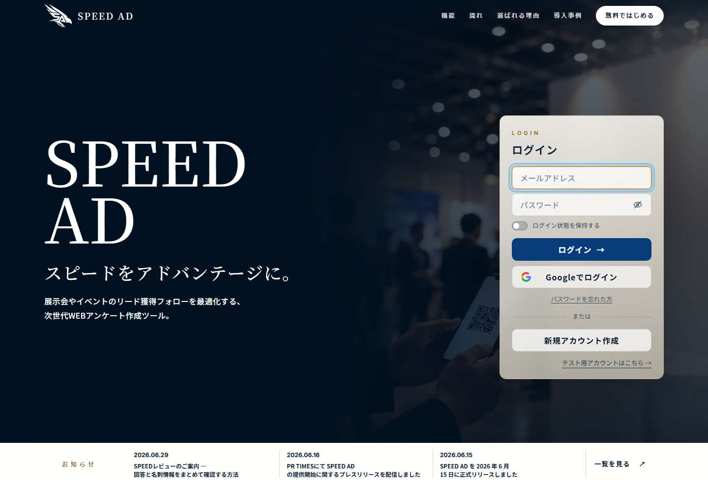
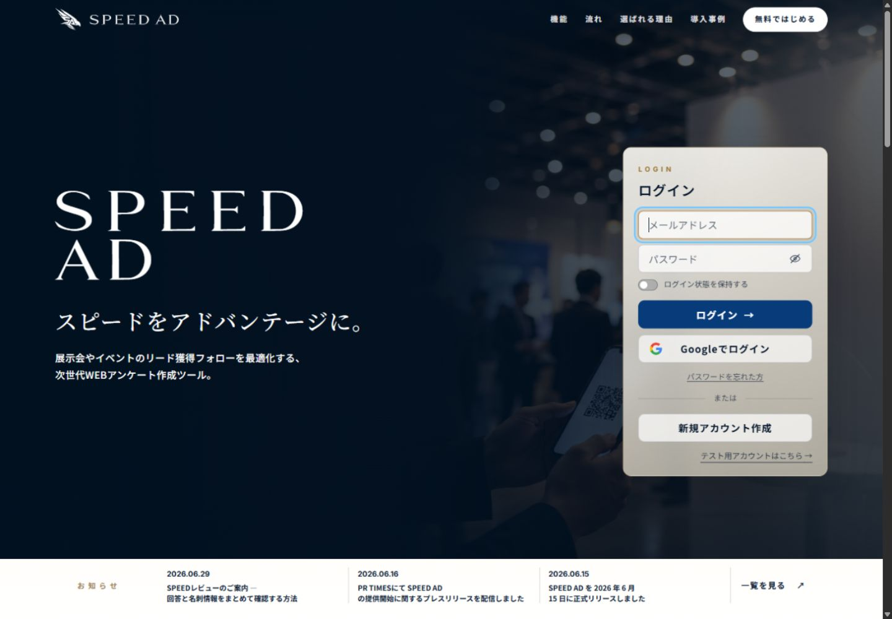
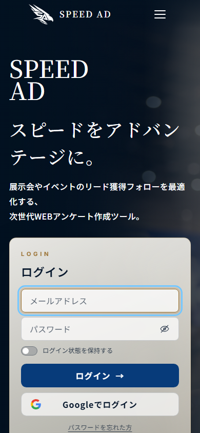
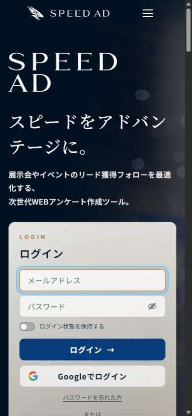
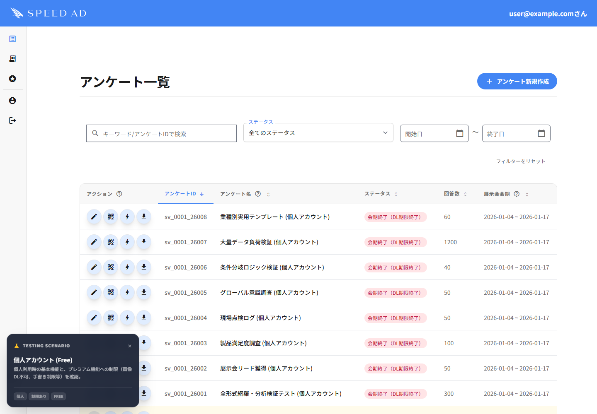
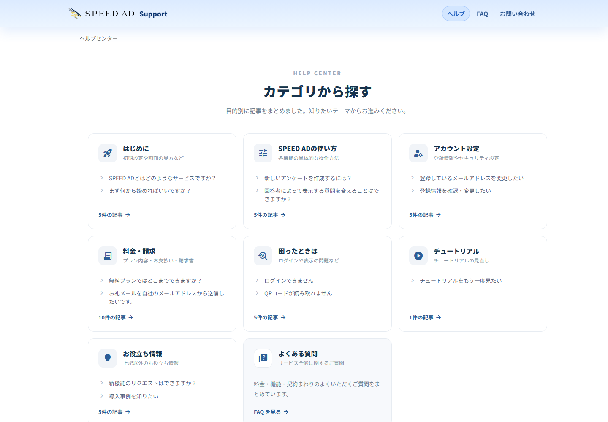
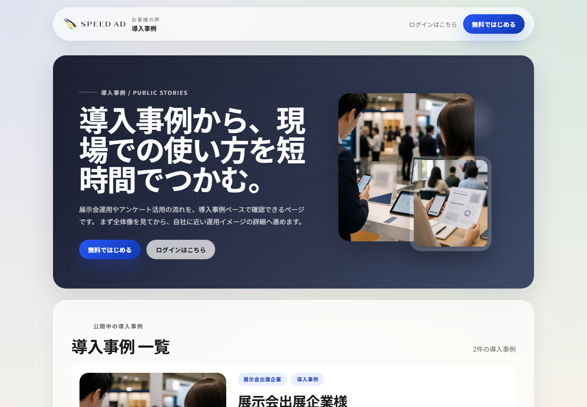

SPEED AD ロゴ差替 前後比較
2026-08-06 / 正しい静的モックリポジトリの最終調整版で取得
暗背景白シルエットエンブレム＋白ワードマーク
白背景カラーエンブレム＋黒ワードマーク
表示ルールヒーローは公式パス由来の選択可能な2行カスタムフォント、ヘッダー／フッターは1行版
ログインLP / デスクトップ 1440×1000


ログインLP / モバイル 390×844


差替後の代表画面



比較対象はブランド表示と必要な余白調整のみです。文言、サービス機能、ナビゲーション、ログイン処理は変更していません。ヒーローの「SPEED AD」は公式の1文字SVGから生成したカスタムフォントを使用し、デスクトップでは最大140pxへ光学調整しています。見た目を維持したまま改行なしで選択・コピーできます。